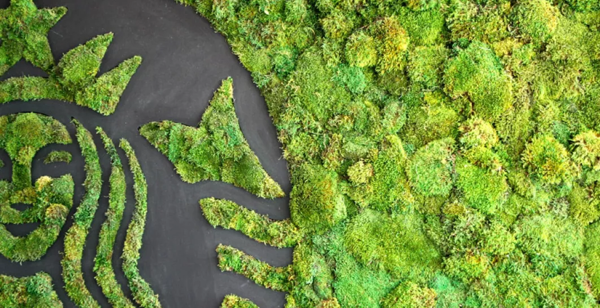
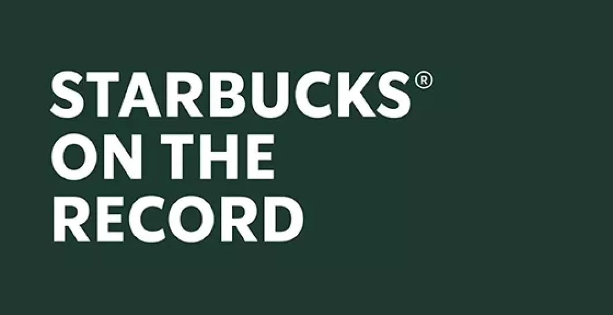
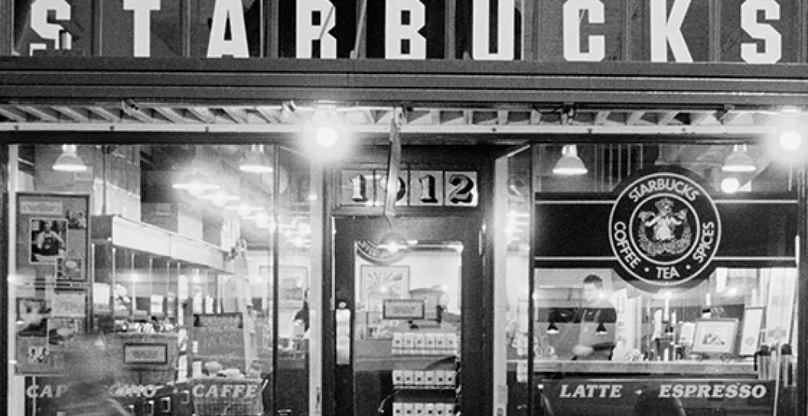
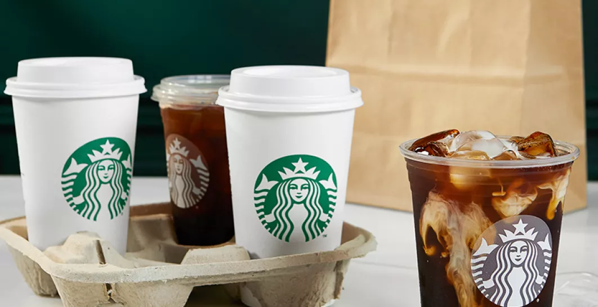

Starbucks®
Starbucks® Delivers
Geniet van al je favorieten aan en knus op je bank terwijl je je favoriete serie bingewatcht. We bezorgen tot aan je deur, zodat je kunt genieten van je Iced Latte of Caramel Frappuccino in de comfort van je eigen huis.
Embracing sustainability
Vanaf 1 juli 2023 brengen we kosten in rekening voor alle wegwerp items gemaakt van plastic. Go Green 💚
Starbucks® verklaringen
In reactie op verkeerde informatie die de ronde doet op sociale media en nieuwskanalen, willen we graag de feiten over de overtuigingen en waarden van Starbucks met je delen.
Over ons
Ontdek meer over ons bedrijf en geschiedenis.
Starbucks® Bezorgd
Genieten van je favoriete Starbucks® drankjes vanuit het comfort van je huis is dichterbij dan je zou denken. Het is de koffie die je kent en waar je van houdt, in je favoriete mok. Kijk of bezorging bij jou in de buurt mogelijk is. Start je bestelling om je Starbucks® favorieten te laten bezorgen via Uber Eats en Thuisbezorgd.